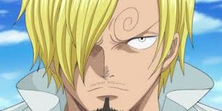

Monkey.D.Luffy
Monkey D. Luffy is the captain of the Straw Hat Pirates, and dreamt of being a pirate since childhood from the influence of his idol and mentor Red-Haired Shanks. At the age of 17, Luffy sets sail from the East Blue Sea to the Grand Line in search of the legendary treasure, One Piece, to succeed Gol D. Roger as "King of the Pirates".
Asta
A peasant orphan who was left at a church, he aspires to become the next Wizard King. He has no magical power, but overcame this through intense physical training which allow him to wield anti-magic swords from a five-leaf clover grimoire in which a devil resides. He then becomes a Magic Knight, joining the Black Bulls squad in hopes of achieving his dream.
Zoro

Zoro is the first crewmate to join Monkey D. Luffy to be part of his crew of pirates, after he is rescued by Luffy from execution. Zoro is a highly skilled swordsman and serves as the crew's combatant,[a] though he possesses an extremely poor sense of direction which recurs as a running gag throughout the series.
Sanji
"Black Leg" Sanji, born as Vinsmoke Sanji, is the cook of the Straw Hat Pirates and one of the Senior Officers of the Straw Hat Grand Fleet. He is the fifth member of the crew and the fourth to join, doing so at the end of the Baratie Arc.
Yuno
Yuno is promoted to vice-captain of the Golden Dawn, and eventually attains the rank of Grand Magic Knight, becoming the youngest to ever reach that rank. William Vangeance later renounces his position and appoints Yuno his successor as the squad's second captain.
Ussop
Usopp is the son of Yasopp and the late Banchina. He was born and raised in Syrup Village, serving as "captain" of the Usopp Pirates and being Kaya's close friend. After working with the Straw Hats to defeat Kuro and the Black Cat Pirates, he was invited to join the crew. Despite his usual cowardice, Usopp dreams of becoming a brave warrior of the sea just like his father and lives every day in pursuit of living up to this dream.